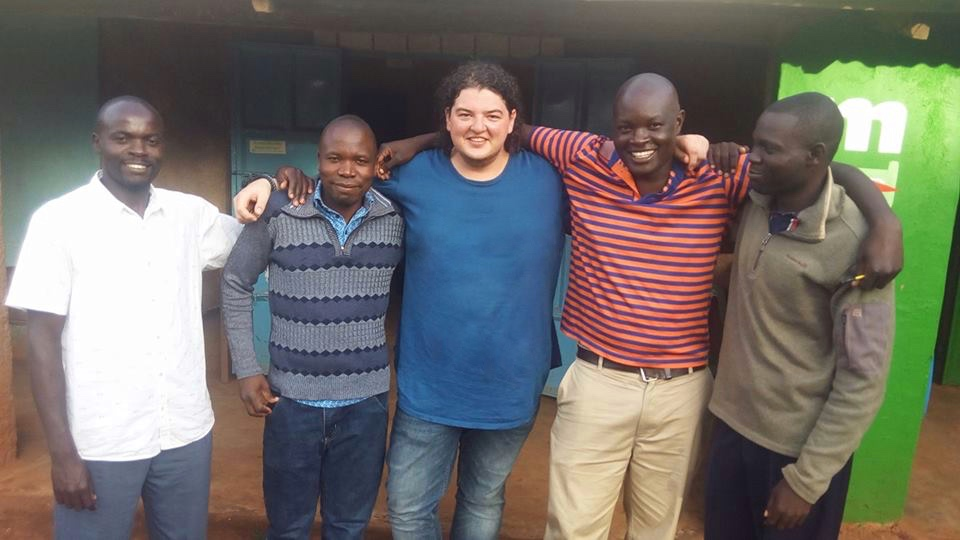

2018 war ein spannendes Jahr für mich. Wie ihr wisst habe ich im Januar meine Zelte in Deutschland abgebrochen und mit mit Rucksack und Laptop in die Welt gezogen. Dabei ging es immer auch darum neue Menschen, neue Kulturen kennen zu lernen und den Horizont zu erweitern.
In Kenya habe ich im April einen Tag mit Julius, Jethron und Moses vom Kipepeo Community Empowerment Program verbracht. Sie haben mir gezeigt, mit welche Engagement und welcher Hingabe sie versuchen das Leben der Menschen im Emuhaya District zu verbessern. Mit Schulbildung, Nachhaltigem Wirtschaften, Microfinancing oder auch Computer-Kursen versuchen sie den Leuten ein besseres Leben zu ermöglichen. Wenn man sich mit den Menschen vor Ort unterhält, ist es doch bitter, wie sehr immer grade Bildung und Information immer noch ein Problem sind. Bis heute hat mich dieser eine kleine Einblick sehr beeindruckt.
Eins ist mir dadurch sehr ins Bewusstsein gerufen worden: Es ist ein riesiges Privileg in einem Umfeld aufzuwachsen, in dem der Zugang zu Essen, Bildung, Informationen "einfach so" gegeben ist. Das ist für viele Menschen dieser Erde nicht selbstverständlich. In meinem Alltag geht das immer oft unter, sicher kennt das der ein oder andere von euch auch. Ich muss ganz ehrlich gestehen: In den Tagen nach dem Besuch, fiel es mir schwer meiner "normalen" Tätigkeit nachzugehen. Eigentlich will man direkt alles stehen und liegen lassen, und irgendwie helfen.
Einige weitere Informationen zum Projekt haben die Jungs auf kipepeo.yolasite.com bereits online. Auch an der Webseite sieht man: Mit allen Mitteln wird aus "nichts" "viel" geschaffen. Falls euch noch mehr interessiert oder mein Erfahrungsbericht von dem Tag vor Ort spannend wäre, sprecht mich einfach an! Grade versuchen wir ein kleines Video von der Situation vor Ort zu machen. Bis das fertig wird, wird es sicherlich noch etwas brauchen.
Nun zum Eigentlichen:
Ich würde ich mich sehr, sehr freuen wenn sich der ein oder andere Euro auf den Weg nach Afrika machen könnte. Ich möchte dieses Jahr auf Geschenke zu Geburtstag und Weihnachten (bei mir bekanntlich beides zeitlich recht nah beisammen) verzichten und lieber das Projekt vor Ort unterstützen. Auch weil ich gesehen habe, dass jeder Euro vor Ort hilft und direkt ankommt. Ohne Bürokratie und Intransparenz.
Ganz lieben Dank euch!
Jonas